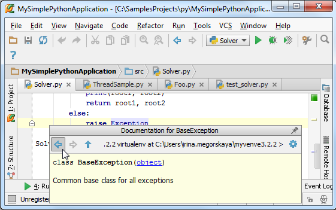

最全Pycharm教程（25）——Pycharm编辑器功能之查看帮助文档
1、准备工作
（1）Pycharm版本为2.7或者更高
（2）与product documentation的注意事项保持一致
（3）已经创建了一个工程并且至少向其中添加了两个脚本文件，详见Getting Started
2、快速查看定义
当你只是想知道相关的声明信息时，不妨使用Quick definition，而无需跳转到实际的定义位置。例如，将光标定位在一个表达式上，然后在主菜单中选择View→Quick Definition：
你可以在弹出的窗口中看到相关的快速定义信息，然后通过方向键来移动浏览整个提示信息。
单击按钮，在Find tool window窗口中找到快速定义信息：
3、快速查看帮助文档
快捷（帮助）文档显示了当前符号的文档注释以及相关注释符。我们再次将光标定位在某个表达式上，这次我们使用View→Quick Documentation的菜单命令。
在弹出的窗口中我们同样可以通过左右方向键来浏览这个文档信息：

当然我们可以调整弹出窗口的大小。单击弹出尺寸调节滚动条，拖动滑块来改变当前尺寸：
单击按钮，在Documentation tool window窗口中打开快速帮助文档：
单击 恢复到原来的窗口形式。
恢复到原来的窗口形式。
4、查看外部文档
这个命令允许你通过默认浏览器查看详细帮助文档信息：
顺便提一句，你可以通过quick documentation pop-up window来打开外部帮助文档，可以单击或者按下Shift+F1快捷键。
外部文档用到的PyQt4，PySide，gtk，wx，numpy，scipy，和kivy等第三方库都是默认版本的，如果你想查看其它版本下的帮助文档，例如Pyramid，请到 Python External Documentation对应位置参考。
5、浏览参数信息
这个命令可以显示函数方法的形参信息：
6、浏览环境上下文信息
最后，你可以通过弹出窗口来浏览代码块开始部分的特定的符号信息。举个例子，我们将光标定位在一个exception上，而函数的声明位于当前可视编辑范围之外，然后按下Alt+Q或者View→Context Info菜单命令：